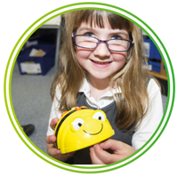

Subject knowledge
The statements in the programme of study are brief. Let’s take a slightly more detailed look at the concepts each statement refers to.
Key stage 1
Understand what algorithms are; how they are implemented as programs on digital devices; and that programs execute by following precise and unambiguous instructions
An algorithm is a precisely defined procedure – a sequence of instructions, or a set of rules, for performing a specific task (e.g. instructions for changing a wheel or making a sandwich). While all correct algorithms should produce the right answer, some algorithms are more efficient than others. Computer scientists are interested in finding better algorithms, partly out of intellectual curiosity, and partly because improvements in algorithms can result in massive savings in terms of both cost and time.
Computer programs, like algorithms, are comprised of sets of rules or instructions, but they differ in that they need to be written in a precise language a computer can ‘understand’. A computer’s central processor understands a very limited set of simple instructions written in machine code. Very few programmers work at this level, so computer scientists have developed programming languages, which sit somewhere between the ideas in the algorithm and the computer’s machine code.
A programmer can turn an algorithm into code using a programming language that has enough in common with the English language to make it easy to read, remember and write.
There are many different programming languages. They each have their own vocabulary, grammar and features that make them appropriate for particular tasks. The current favourites in primary schools are Scratch, Logo and Kodu.
Programs are made up of statements in a limited, but precisely understood, vocabulary. Each statement in the program has one particular meaning. The computer follows the instructions given: nothing more and, almost always, nothing less.
A ‘computer’ is not just a traditional desktop or laptop PC; it is any device that accepts input, processes it according to a stored program, and produces an output. The input, stored program and output are all encoded as numbers, making these devices ‘digital’. Digital devices include the controller in your car or microwave oven, your mobile phone, tablet, laptop and desktop, as well as high-end supercomputers and ‘virtual’ servers in the ‘cloud’.

We would like to acknowledge and thank ARM Holdings and Raspberry Pi Foundation for their kind financial support without which the production of this guide would not have been possible.


Copyright

This work is licensed under a Creative Commons Attribution-NonCommercial-ShareAlike 3.0 Unported License